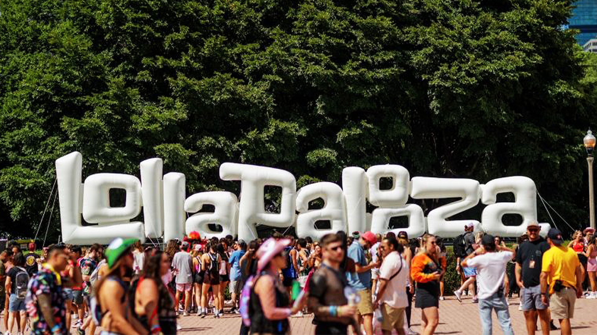

Lolapalooza
El festival del mundo moderno
Lollapalooza es un macrofestival internacional de música, arte y cultura celebrado anualmente durante tres días en el Hipódromo de San Isidro, Argentina, con más de 100 bandas en cinco escenarios. Creado en 1991 por Perry Farrell, destaca por su diversidad de géneros (rock, indie, urbano, pop) y experiencias, incluyendo arte, gastronomía, el espacio infantil Kidzapalooza y el enfoque sustentable Espíritu Verde.
